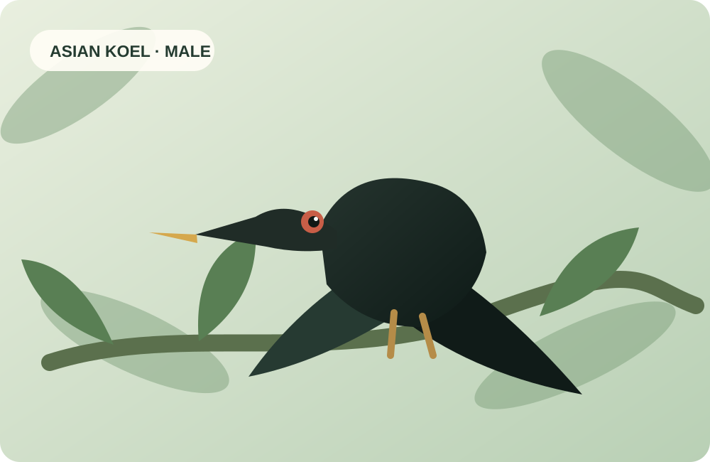

Describe what happens
Early naturalists recorded what animals did, often combining observation with the explanations available in their time.
A short introduction
A familiar bird. A remarkable behaviour. And the questions that turn an observation into science.
Begin with the koel ↓
First, a question
Most people recognise the koel. But can you name one of its best-known behaviours?
Choose an answer to reveal a short explanation.
A very old observation
Aristotle described cuckoos laying eggs in other birds’ nests in History of Animals. His account is among the earliest surviving written descriptions of brood parasitism. Observing behaviour is ancient; testing explanations systematically is what makes it science.
Early naturalists recorded what animals did, often combining observation with the explanations available in their time.
Careful records, comparisons and experiments help distinguish what we observe from what we think explains it.
Researchers combine field observations, experiments and modern tracking tools to investigate behaviour.
A behaviour beyond one bird
Brood parasitism occurs in multiple cuckoo species, each with its own host relationships and strategies. A 2025 review of records in China reported 15 parasitic cuckoo species associated with 142 actual and potential host species. These records also show why host relationships need careful verification.
Think like a researcher: If you see an adult sunbird feeding a hawk-cuckoo chick, what can you conclude from that observation alone — and what would you need to record before drawing a broader conclusion?
From natural history to behavioural science
Karl von Frisch, Konrad Lorenz and Nikolaas Tinbergen shared the 1973 Nobel Prize in Physiology or Medicine for discoveries concerning the organisation and elicitation of individual and social behaviour patterns.
His work on honeybee communication and sensory abilities showed how carefully designed experiments can reveal information unavailable from casual observation alone.
Lorenz investigated behavioural patterns and imprinting, helping establish the importance of development and inherited predispositions in behaviour.
Tinbergen used field experiments, including work on gulls, to investigate what triggers behaviour, how it develops, what it does and how it evolved.
Behaviour is not simply “learned” or “genetic”. Its development can involve inherited mechanisms, experience and the environment. The scientific task is to investigate how these influences work together.
Tinbergen’s four questions
Consider a cuckoo chick ejecting a host egg or chick from the nest. Each question directs us towards a different kind of evidence.
Does removing competitors improve access to food or parental care?
How does the behaviour emerge during the chick’s lifetime, and what roles do genes and experience play?
How has egg-ejection behaviour changed across cuckoo lineages?
What sensory cues and motor processes trigger the behaviour?
These questions are not competing explanations. Together, they provide a fuller account of behaviour.
Why study behaviour?
Birds have helped researchers explore orientation, navigation, communication and coordinated movement. Here are two examples to take us beyond description.

Carrier pigeons, including the celebrated Cher Ami during the First World War, carried messages over difficult terrain. Their homing ability also raises enduring scientific questions about navigation and orientation.

Birds flying in V-formations have inspired studies of aerodynamic interactions, energy use and how moving animals coordinate their positions.
These examples are not claims that one discovery directly produced a particular technology. They show how studying behaviour can open up broader scientific questions.
Where we go next
How do birds know when to leave? What guides them? Why migrate, and what are the costs? This workshop begins with the foundations of behavioural observation and moves towards migration, field methods and research design.